样式写在要写在head的style标签里面,要注意缩进
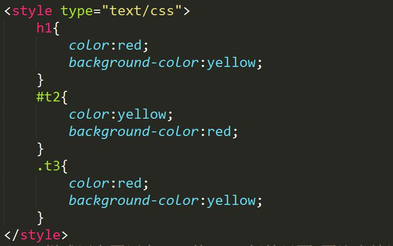
为了区分标签要给表示不同内容的标签起class名字和id名字
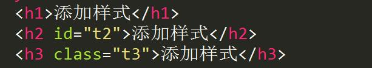
*为通配符选择器,可以选到所有元素
class选择器,可以选到同样class名字的元素
id选择器,只能选到那个id名字的元素,因为id只有一个
标签选择器可以选到该标签下的元素
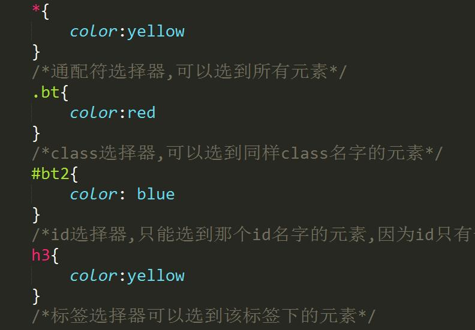
任何一个div盒子都有三个属性
1.border 边框,算在盒子的长宽里面
2.margin 外边距,不算在盒子的长宽里面
3.padding 内边距,算在盒子的长宽里面
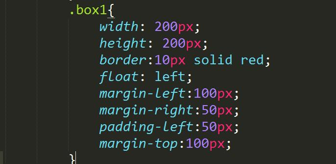
标签选择器的权重值最低为1
class选择器的权重值为10
id选择器的权重值为100
权重值高的选择器的样式会覆盖权重值低的样式
盒子会适应内容的高度
内容元素浮动，容器不会适应内容高度
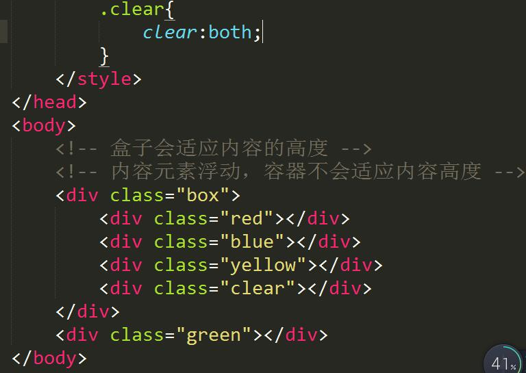
该方法做出的网页内容可随着浏览器大小的变化而自己适应
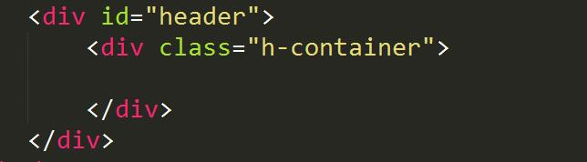
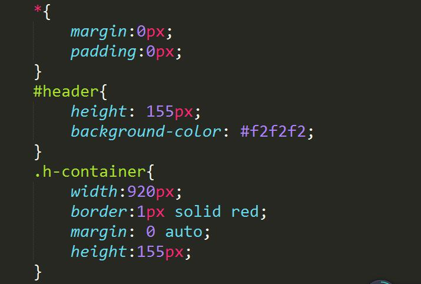
如何解决margin作用于父级的问题,给父级添加一个overflow:hidden
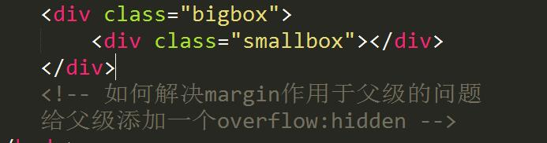
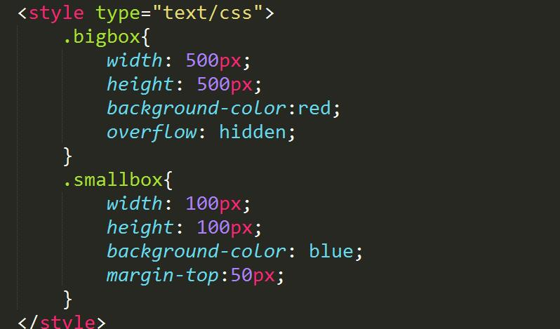
overflow的三个值
1.默认不隐藏
3.auto 有滚动条
4.hidden 没有滚动条,多余的部分不显示
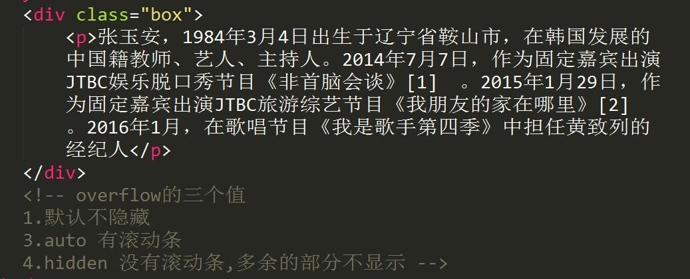
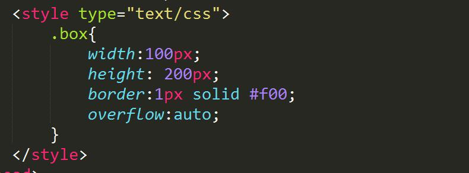
列表的前面的图标是可以通过list-style-image属性的url()来改变
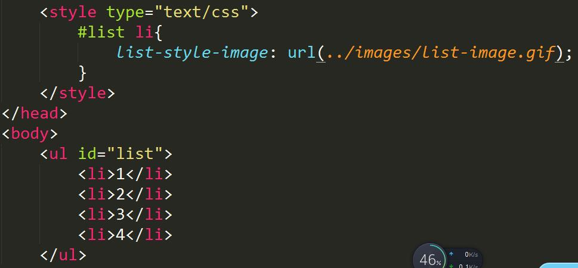
如果没有position属性,top,left,bottom,right属性不起作用
决定定位position:absolute;两个值分别为top(bottom)和left(right)
绝对定位不占位,脱离文档流,如果父级有position:relative,那么参照父级,否则参照物为body
相对定位position:relative;占位,定位参照原来的位置
固定定位position:fixed;参照浏览器窗口,不占位
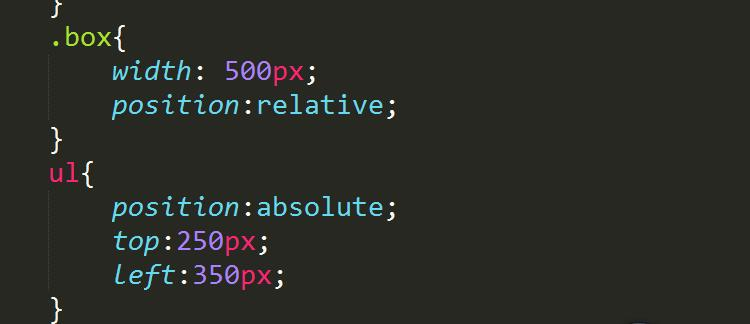
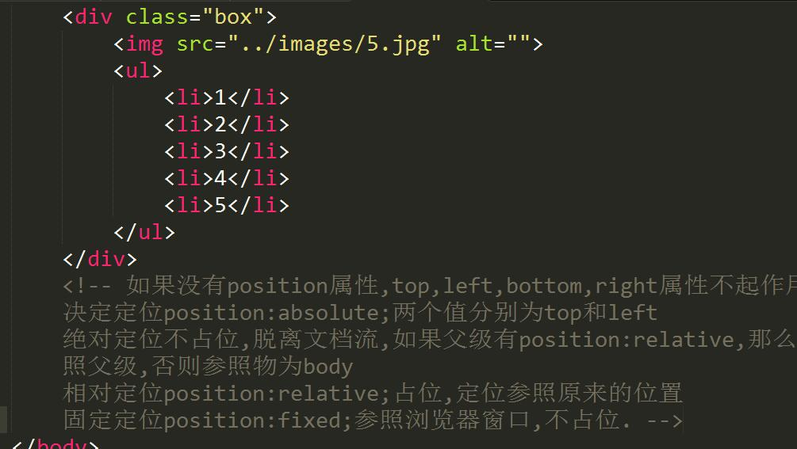
要点:
元素浮动：块元素不独立成行
去掉列表前的点
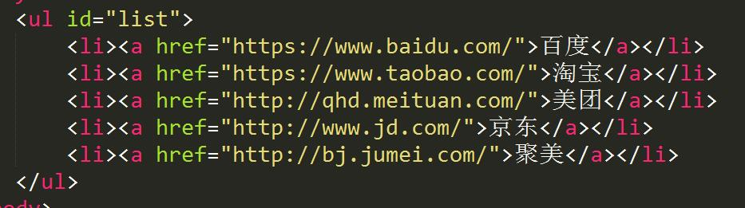
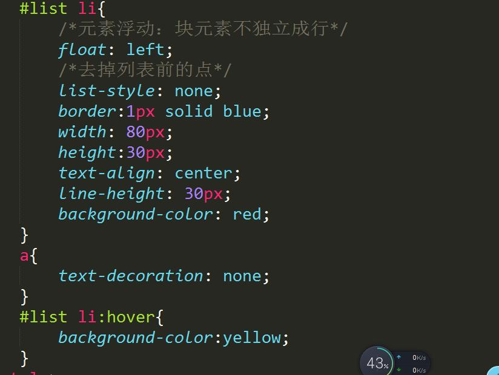